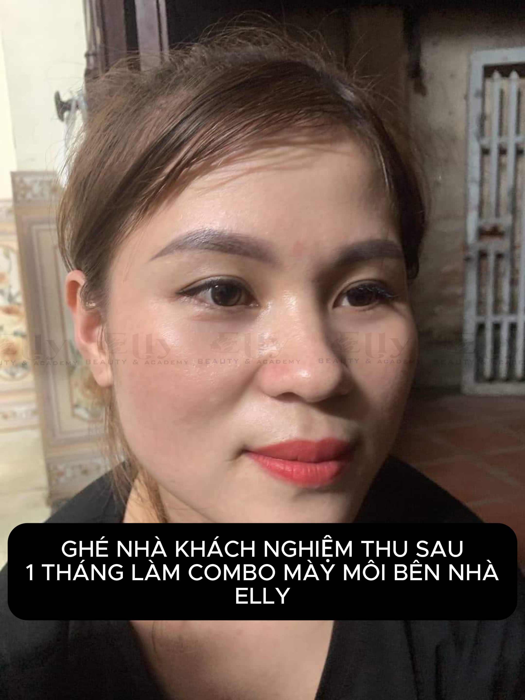
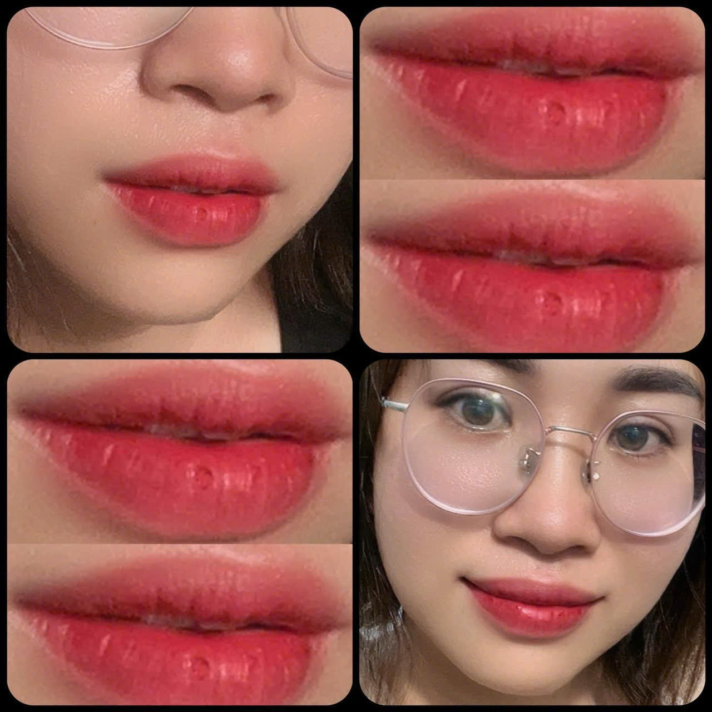

Phun Môi Có Đau Không? Những Điều Bạn Nên Biết Trước Khi Quyết Định
Một trong những câu hỏi mà khách hàng thường đặt ra trước khi phun môi là: "Phun môi có đau không?". Nỗi lo này hoàn toàn dễ hiểu, đặc biệt với những người lần đầu trải nghiệm dịch vụ phun xăm thẩm mỹ.
Thực tế, với công nghệ hiện đại và quy trình thực hiện đúng kỹ thuật, đa số khách hàng chỉ cảm thấy hơi châm chích hoặc căng tức nhẹ trong quá trình làm. Mức độ cảm nhận sẽ khác nhau tùy theo cơ địa, ngưỡng chịu đau và tay nghề của kỹ thuật viên.
Phun Môi Có Đau Không?
Câu trả lời là có cảm giác nhưng thường không quá đau. Trước khi thực hiện, kỹ thuật viên sẽ ủ tê vùng môi trong khoảng 15-30 phút. Nhờ đó, cảm giác khó chịu được giảm đáng kể.
Trong quá trình phun, nhiều khách hàng mô tả cảm giác như châm chích nhẹ, rung nhẹ trên môi hoặc hơi căng tức khi máy di chuyển. Đa số đều có thể thực hiện trọn vẹn buổi phun mà không gặp khó khăn.


Những Yếu Tố Ảnh Hưởng Đến Cảm Giác Đau
Cơ địa mỗi người
Mỗi người có ngưỡng chịu đau khác nhau. Có người gần như không cảm thấy khó chịu, trong khi một số người sẽ nhạy cảm hơn.
Tay nghề kỹ thuật viên
Kỹ thuật viên có kinh nghiệm sẽ kiểm soát lực tay và độ sâu của kim phù hợp, giúp hạn chế tổn thương và mang lại cảm giác dễ chịu hơn.
Công nghệ và thiết bị
Máy phun hiện đại cùng đầu kim chất lượng giúp thao tác chính xác, giảm ma sát và hạn chế sưng đau.
Tình trạng môi
Nếu môi đang khô nứt, viêm hoặc có tổn thương, cảm giác khó chịu có thể nhiều hơn. Vì vậy, nên để môi khỏe trước khi thực hiện.
Sau Khi Phun Môi Có Đau Không?
Sau khi thuốc tê hết tác dụng, môi có thể hơi căng, hơi rát nhẹ hoặc sưng ít trong 1-2 ngày đầu. Đây là phản ứng bình thường của cơ thể và thường giảm dần theo thời gian.
Nếu xuất hiện các dấu hiệu bất thường như đau tăng nhiều, sưng kéo dài hoặc chảy dịch, bạn nên liên hệ ngay với cơ sở thực hiện để được hướng dẫn.
Làm Gì Để Giảm Khó Chịu Sau Phun?
Bạn nên chườm mát theo hướng dẫn của kỹ thuật viên, giữ môi sạch và khô trong giai đoạn đầu, uống đủ nước, không bóc lớp bong và tuân thủ hướng dẫn chăm sóc sau phun.
Việc chăm sóc đúng cách không chỉ giúp môi dễ chịu hơn mà còn hỗ trợ màu lên đẹp và đều.
Những Hiểu Lầm Thường Gặp
Phun môi đau hơn xăm hình?
Không hẳn. Mức độ cảm nhận khác nhau ở mỗi người và quy trình phun môi hiện nay thường có bước ủ tê trước khi thực hiện.
Người sợ đau có nên phun môi?
Nếu bạn có ngưỡng chịu đau thấp, hãy trao đổi trước với kỹ thuật viên để được tư vấn quy trình phù hợp.
Môi càng sưng thì màu càng đẹp?
Không đúng. Mức độ sưng không quyết định chất lượng màu sau khi hồi phục.
Checklist Trước Khi Phun Môi
Chọn cơ sở uy tín và kỹ thuật viên có kinh nghiệm.
Thông báo nếu bạn có tiền sử dị ứng hoặc môi đang tổn thương.
Nghỉ ngơi đầy đủ trước ngày thực hiện.
Làm theo hướng dẫn chăm sóc sau phun để môi hồi phục tốt hơn.
Câu Hỏi Thường Gặp
Phun môi có cần gây mê không?
Thông thường chỉ cần ủ tê tại chỗ, không cần gây mê.
Sau bao lâu môi hết khó chịu?
Đa số khách hàng cảm thấy dễ chịu hơn sau vài ngày đầu, tùy cơ địa và cách chăm sóc.
Phun môi lần đầu có đau hơn dặm lại không?
Cảm giác có thể khác nhau ở từng người, nhưng nhìn chung đều ở mức có thể chịu được nếu thực hiện đúng kỹ thuật.
Người sợ đau có nên phun môi không?
Có thể cân nhắc nếu môi khỏe và được tư vấn kỹ. Bạn nên nói trước với kỹ thuật viên để quy trình nhẹ nhàng hơn.
Kết Luận
Phun môi không hoàn toàn không có cảm giác, nhưng với công nghệ hiện nay và quy trình đúng chuẩn, đa số khách hàng chỉ cảm thấy hơi châm chích nhẹ. Điều quan trọng là lựa chọn cơ sở uy tín và tuân thủ hướng dẫn chăm sóc để có đôi môi lên màu đẹp, tự nhiên.